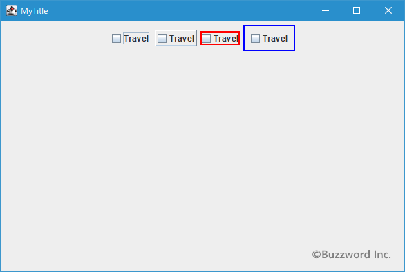

チェックボックスの余白の変更と枠線の変更
チェックボックスでは表示される文字列や画像の回りに余白が設定されていますが変更することができます。またデフォルトで表示されている枠線を任意の枠線に変更することもできます。ここではチェックボックスに設定されている余白を変更する方法とチェックボックスの枠線を変更する方法について解説します。
余白を変更する
チェックボックスに表示される文字列や画像とチェックボックスの枠線との間の余白を設定するには JCheckBox クラスの親クラスである AbstractButton クラスで用意されている setMargin メソッドを使います。
public void setMargin?(Insets m)
ボタンのボーダーとラベルの間のマージンを設定します。 nullに設定すると、ボタンはデフォルトのマージンを使用します。 ボタンのデフォルトのBorderオブジェクトは、この値を使用して適切なマージンを作成します。 ただし、ボタンにデフォルト以外の境界が設定されている場合は、Borderオブジェクトが適切なマージン空白を作成します(それ以外の場合、このプロパティは事実上無視されます)。
パラメータ:
m - ボーダーとラベルの間のマージン
引数には上下左右の余白の大きさを保持する Insets クラスのオブジェクトを指定します。( Insets クラスの詳細は「Insetsクラス」を参照して下さい)。
実際の使い方は次のようになります。
JCheckBox check = new JCheckBox("Travel");
check.setMargin(new Insets(10, 10, 10, 10));
サンプルプログラム
それでは簡単なサンプルプログラムを作って試してみます。テキストエディタで次のように記述したあと、 JSample6_1.java という名前で保存します。
import javax.swing.JFrame;
import javax.swing.JCheckBox;
import javax.swing.JPanel;
import java.awt.Container;
import java.awt.BorderLayout;
import java.awt.Insets;
import java.awt.Color;
class JSample6_1 extends JFrame{
public static void main(String args[]){
JSample6_1 frame = new JSample6_1("MyTitle");
frame.setVisible(true);
}
JSample6_1(String title){
setTitle(title);
setBounds(100, 100, 600, 400);
setDefaultCloseOperation(JFrame.EXIT_ON_CLOSE);
JCheckBox check1 = new JCheckBox("Travel");
check1.setBackground(Color.WHITE);
JCheckBox check2 = new JCheckBox("Travel");
check2.setBackground(Color.ORANGE);
check2.setMargin(new Insets(30, 30, 80, 30));
JCheckBox check3 = new JCheckBox("Travel");
check3.setBackground(Color.PINK);
check3.setMargin(new Insets(0, 0, 0, 0));
JPanel p = new JPanel();
p.add(check1);
p.add(check2);
p.add(check3);
Container contentPane = getContentPane();
contentPane.add(p, BorderLayout.CENTER);
}
}
次のようにコンパイルを行います。
javac JSample6_1.java
コンパイルが終わりましたら実行します。
java JSample6_1
チェックボックスを 3 つ追加しました。 1 つ目のチェックボックスはデフォルトのまま、 2 つ目のチェックボックスには少し大きめの余白を設定し、 3 つ目のチェックボックスは余白を 0 に設定しています。
枠線を変更する
チェックボックスにはデフォルトで枠線が表示されていまっせん。枠線を表示するかどうか設定するには JCheckBox クラスの親クラスである AbstractButton クラスで定義されている setBorderPainted メソッドを使って設定します。
public void setBorderPainted?(boolean b)
borderPaintedプロパティを設定します。 trueでボタンがボーダーを持つ場合は、ボーダーがペイントされます。 borderPaintedプロパティのデフォルト値はtrueです。
ルック・アンド・フィールによってはborderPaintedプロパティがサポートされない場合があり、その場合、これは無視されます。
パラメータ:
b - trueであり、ボーダーのプロパティがnullでない場合、ボーダーをペイントする
引数には枠線を描画するかどうかを表す boolean 型の値を指定します。 true を設定すると枠線を描画し、 false を設定すると枠線を描画しません。デフォルトの値は true です。
実際の使い方は次のようになります。
JCheckBox check = new JCheckBox("Travel");
check.setBorderPainted(true);
この場合、チェックボックスの枠線が表示されるようになります。
-- --
次にチェックボックスに枠線が表示されているときに枠線のスタイルを変更することができます。チェックボックスの枠線を変更するには JCheckBox クラスの親クラスである JComponent クラスで用意されている setBorder メソッドを使います。
public void setBorder?(Border border)
このコンポーネントのボーダーを設定します。 Borderオブジェクトは、コンポーネントのイン・セットを定義し(コンポーネントで直接設定されているイン・セットをオーバーライドする)、任意でそれらのイン・セットの境界内のボーダー装飾をレンダリングします。 Swingコンポーネントで装飾領域および非装飾領域(マージンおよびパディングなど)の両方を生成するには、イン・セットではなくボーダーを使用する必要があります。 単一のコンポーネント内で複数のボーダーを入れ子にするには、複合ボーダーを使用できます。
技術的にはJComponentを継承するどのオブジェクトにもボーダーを設定できますが、標準のSwingコンポーネントのルック・アンド・フィールの実装の多くは、ユーザー設定のボーダーでは正しく動作しません。 通常、JPanelまたはJLabel以外の標準のSwingコンポーネントでボーダーを設定するときは、コンポーネントをJPanelに入れて、JPanelでボーダーを設定することをお勧めします。
これはバウンド・プロパティです。
パラメータ:
border - このコンポーネントでレンダリングされるボーダー
引数には枠線を表す Border インターフェースを実装したクラスのオブジェクトを指定します。( Border インターフェースの詳細は「Border」を参照して下さい)。
実際の使い方は次のようになります。
JCheckBox check = new JCheckBox("Travel");
check.setBorderPainted(true);
LineBorder border = new LineBorder(Color.RED, 2, true);
check.setBorder(border);
なお枠線を設定した場合、必要に応じて余白を設定する必要があります。ただし枠線を設定したボタンに余白を設定しても反映されない場合があります。
サンプルプログラム
それでは簡単なサンプルプログラムを作って試してみます。テキストエディタで次のように記述したあと、 JSample6_2.java という名前で保存します。
import javax.swing.JFrame;
import javax.swing.JCheckBox;
import javax.swing.JPanel;
import javax.swing.border.LineBorder;
import java.awt.Container;
import java.awt.BorderLayout;
import java.awt.Color;
class JSample6_2 extends JFrame{
public static void main(String args[]){
JSample6_2 frame = new JSample6_2("MyTitle");
frame.setVisible(true);
}
JSample6_2(String title){
setTitle(title);
setBounds(100, 100, 600, 400);
setDefaultCloseOperation(JFrame.EXIT_ON_CLOSE);
JCheckBox check1 = new JCheckBox("Travel");
JCheckBox check2 = new JCheckBox("Travel");
check2.setBorderPainted(true);
JCheckBox check3 = new JCheckBox("Travel");
check3.setBorderPainted(true);
check3.setBorder(new LineBorder(Color.RED, 2, false));
JCheckBox check4 = new JCheckBox("Travel");
JPanel checkbox_panel = new JPanel();
checkbox_panel.add(check4);
checkbox_panel.setBorder(new LineBorder(Color.BLUE, 2, false));
JPanel p = new JPanel();
p.add(check1);
p.add(check2);
p.add(check3);
p.add(checkbox_panel);
Container contentPane = getContentPane();
contentPane.add(p, BorderLayout.CENTER);
}
}
次のようにコンパイルを行います。
javac JSample6_2.java
コンパイルが終わりましたら実行します。
java JSample6_2
チェックボックスを 4 つ追加しました。 1 つ目のチェックボックスはデフォルトのまま、 2 つ目のチェックボックスにはデフォルトの枠線を表示するように設定しました。 3 つ目のチェックボックスと 4 つ目のチェックボックスにはデフォルトとは異なる枠線を設定しています。

3 つ目のチェックボックスを見て頂くと分かりますが、デフォルトとは異なる枠線を設定すると余白が変更されます。この場合は余白がゼロになっているように見えます。 setMargin メソッドを使って余白を設定しても反映されなかったため、 4 つ目のチェックボックスはパネルを一つ作成したあとパネルにチェックボックスを追加し、パネルに枠線を設定しました。
-- --
チェックボックスに設定されている余白を変更する方法とチェックボックスの枠線を変更する方法について解説します。
( Written by Tatsuo Ikura )

著者 / TATSUO IKURA
初心者～中級者の方を対象としたプログラミング方法や開発環境の構築の解説を行うサイトの運営を行っています。